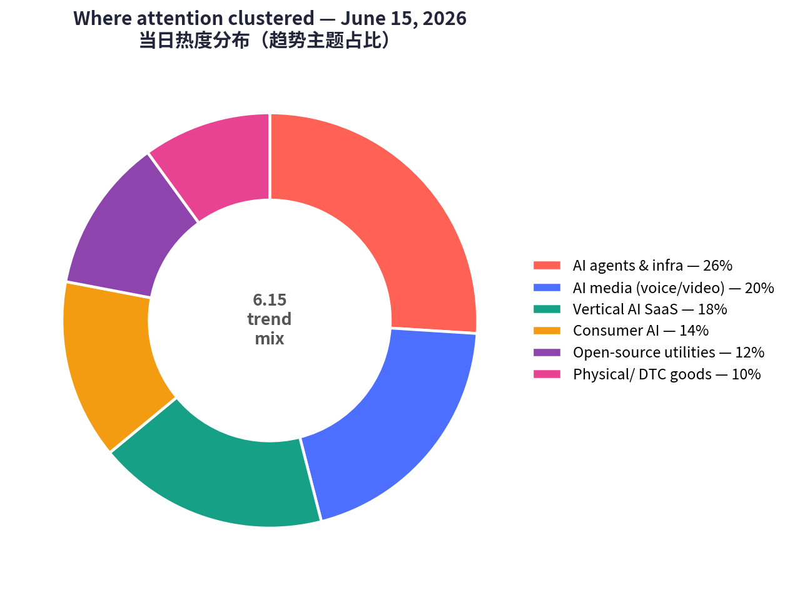
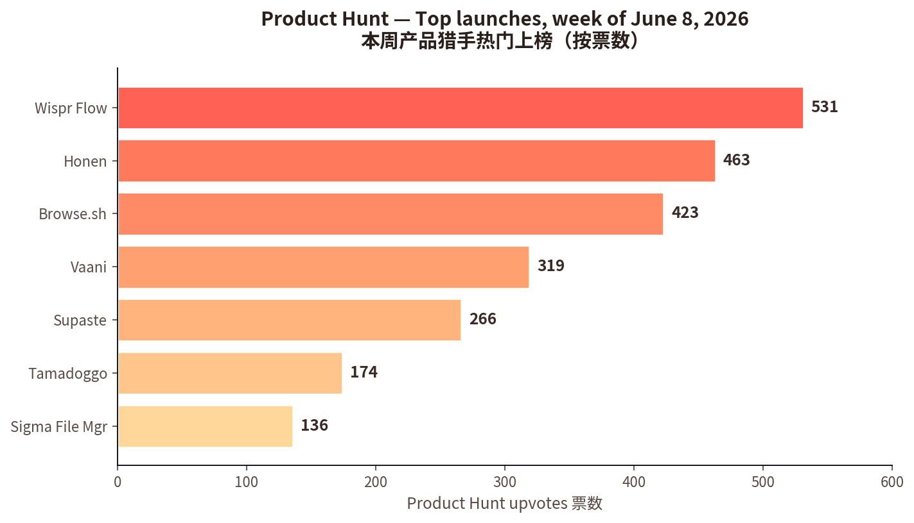
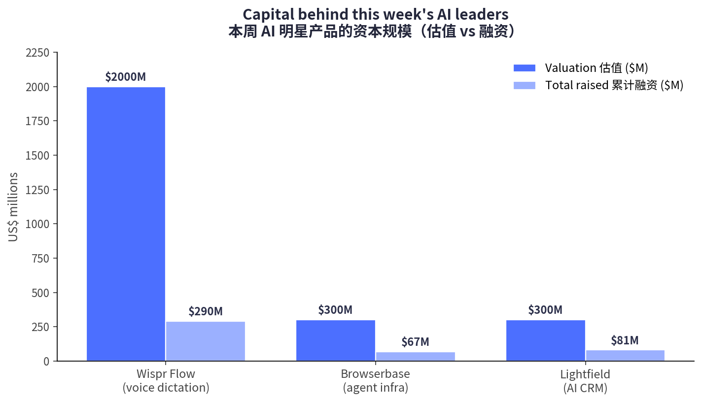

🎯 一句话：今天的主线是「能交付结果、可被信任、嵌进真实工作流的 AI 基础设施」正在取代「会演示的 AI」。
In one line: capital and attention are rotating from demo-able AI toward infrastructure that delivers outcomes, earns trust, and embeds into real workflows. a16z calls it "Fat Startups" & pay-for-the-outcome; Hacker News pushes security, governance & auditability to the center.



② 逐个产品深度分析 · Product Deep-Dives
7 个精选标的：6 个具体产品 + 1 个消费品横向趋势。每节含数据表与「为何值得看」。

1 · Browserbase（Browse.sh）
Give your agents muscle memory for automating the web — 给 AI agent 一双「会用浏览器的手」
| 商业模式 Model | 用量计费云基础设施 / Browser-as-a-Service API；开发者自助 + 企业销售。 |
|---|---|
| 核心功能 Features | 大规模运行/管理/监控无头浏览器；Search & Fetch API；让「网页像 API 一样可编程、可靠」。 |
| 成功关键 Why wins | AI agent 时代的「卖铲人」，把最脏最难的真实网页交互标准化；1000+ 客户背书。 |
| 细分/受众 Niche | 自主 web agent 的无头浏览器基础设施｜AI agent 开发者、vibe coders、自动化团队。 |
| 品牌设计 Brand | 极客实用风；「muscle memory」隐喻精准，开发者一听就懂。 |
| 口碑 Reviews | 被视为 agent 技术栈的「关键一层」，可靠性与规模获认可。 |

2 · Lightfield
AI-native CRM that builds itself and does work for you — 会自己更新的 AI-native CRM
| 商业模式 Model | 席位 + 用量 SaaS 订阅；定位「替换 HubSpot / Salesforce」。 |
|---|---|
| 核心功能 Features | 自动捕获每次通话/邮件/会议/消息→「永远最新、可查询」的记录系统；一句 prompt 造出能拓客、跟进、复盘的 agent。 |
| 成功关键 Why wins | 「按结果付费」活教材——CRM 自维护、零录入；一小时迁移 agent 拆掉切换成本；接 Notion/Linear/Granola。 |
| 细分/受众 Niche | 自维护、agentic 的 CRM｜高增长初创（尤其 YC 系）。 |
| 品牌设计 Brand | 「builds itself」反工具叙事，直击 CRM 最大痛点——录入。 |
| 口碑 Reviews | SaaStr「本周 AI 应用」；号称「初创生态增长最快的 CRM」。 |

3 · Wispr Flow
Stop typing. Start speaking. 4x faster. — 把说话变成跨应用的默认输入法
| 商业模式 Model | 免费增值订阅：Free（2000 词/周）→ Pro $15/月（$144/年）→ Enterprise 询价。 |
|---|---|
| 核心功能 Features | 系统级 AI 听写，在「任何 App」里都能用并按你的风格润色；命令模式、自动编辑、100+ 语言。 |
| 成功关键 Why wins | 语音模型成熟让「说」首次比「打」快；靠转型找到 PMF；跨平台一致。 |
| 细分/受众 Niche | 全系统 AI 语音输入｜知识工作者、写作者、多语种、无障碍人群。 |
| 品牌设计 Brand | 「Flow（心流）」+「4x faster」极简价值主张，强调无处不在。 |
| 口碑 Reviews | 格式化与命令模式好评；但 Trustpilot 仅 2.7/5，有计费/隐私（云端处理）投诉——增长与口碑的张力。 |

4 · Vaani
Lip-synced AI dubbing for creators, brands and studios — 对口型的 AI 配音
| 商业模式 Model | 创作者工具，多按「分钟/订阅」计费（行业基准 $2–20/分钟，对比录音棚 $5k–15k/小时/语种）。 |
|---|---|
| 核心功能 Features | 翻译 + 配音 + 时间轴 + 对口型 一体化，让译制视频「嘴型对得上」。 |
| 成功关键 Why wins | 乘「创作者全球化」大势，以 ~90% 成本节省替代录音棚；口型真实度是差异点。 |
| 细分/受众 Niche | 多语种对口型 AI 配音｜创作者、出海品牌、影视/培训工作室。 |
| 品牌设计 Brand | 「Vaani」（梵语「声音/言语」）带文化质感，三端定位清晰。 |
| 口碑 Reviews | 上线热度高（PH #3）；第三方独立评测尚少。竞品 HeyGen / Rask / ElevenLabs。 |

5 · Honen
Automated teaching + learning infrastructure for any company — 会自动更新的企业教学基础设施
| 商业模式 Model | B2B SaaS，按工作区/席位 + 行业项目（sector programs）。 |
|---|---|
| 核心功能 Features | 把公司知识变成 AI 主导互动课程：自适应课时、模拟演练、学习洞察；文档/工具/流程变动时课程 自动更新。 |
| 成功关键 Why wins | 直击痛点——「企业每年砸数十亿做通用培训，课程做完技能已半失效」。用「活课程」消灭陈旧。 |
| 细分/受众 Niche | 自更新的「员工赋能基础设施」｜企业/SMB/政府/工会/高校 L&D。 |
| 品牌设计 Brand | 定位「infrastructure」而非「课程工具」，叙事格局更大。 |
| 口碑 Reviews | 与「AI 替你干活」赋能叙事高度共振，登顶当周。 |

6 · Tamadoggo
A living journal for your pet's life, with AI insights — 给宠物的 AI 成长日记
| 商业模式 Model | 消费级 iOS App，预计免费增值订阅。 |
|---|---|
| 核心功能 Features | 记录宠物日常的「活日记」，叠加 AI 洞察（健康/行为/里程碑）。 |
| 成功关键 Why wins | 抓住「宠物当主角」的情感价值 + 记录习惯；Tamagotchi 风命名唤起怀旧。 |
| 细分/受众 Niche | AI 宠物生活记录与洞察｜千禧/Z 世代养宠人群。 |
| 品牌设计 Brand | 「Tamadoggo」= Tamagotchi + doggo，可爱好记、社媒友好。 |
| 口碑 Reviews | 品牌讨喜，情感共鸣强。 |
7 · 实体好物飙升 + 小红书「真实种草」
Social-driven consumption — viral physical goods + RED's "raw & real" seeding
| 商业模式 Model | DTC/marketplace 冲动零售；创作者「种草」驱动需求。 |
|---|---|
| 核心功能 Features | 低价实用/猎奇好物：Stanley 保温杯、迷你电锯、水槽防溅垫、碎鸡肉神器、防晒、过敏季健康品。 |
| 成功关键 Why wins | 社交证明 + 季节性 + 低价＝飙升榜火箭燃料；小红书种草从「追爆点」转向「理解人」，内容转向 真实粗糙感。 |
| 细分/受众 Niche | 「让我买」好物 + 健康养生｜大众消费者、Z 世代/千禧生活方式买家。 |
| 品牌设计 Brand | 去精致化、强信任感 UGC；「主角感/自我关怀」叙事。 |
| 口碑 Reviews | 季节性（过敏/防晒/户外）+ 猎奇驱动飙升；评价强调「真实使用」。 |
③ 横向对比表 · Cross-Comparison Matrix
| 产品 Product | 赛道 Category | 商业模式 Model | 目标受众 Audience | 关键数据 Key data | 成功核心 Why it wins | 链接 |
|---|---|---|---|---|---|---|
| Browserbase | Agent 基础设施 | 用量计费 BaaS | Agent 开发者 | $300M 估值 / 50M+ 会话 | 卖铲人，标准化网页交互 | ↗ |
| Lightfield | AI-native CRM | 席位+用量 SaaS | 高增长初创 | $81M 融资 / 2500+ 工作区 | 自维护 + 1 小时迁移 | ↗ |
| Wispr Flow | 语音输入 | 免费增值 $15/月 | 知识工作者 | ~$2B 估值 / 100+ 语言 | 说比打快；跨应用 | ↗ |
| Vaani | AI 配音 | 分钟/订阅 | 创作者/品牌/工作室 | PH #3 / 319 👍 | 对口型 + 90% 降本 | ↗ |
| Honen | 企业赋能 | B2B SaaS | L&D / 培训 | PH #1 / 463 👍 | 课程随业务自更新 | ↗ |
| Tamadoggo | 消费 AI / 宠物 | 消费订阅 | 养宠人群 | PH #6 / 174 👍 | 情绪价值 + 习惯 | ↗ |
| 实体好物 + RED | 消费电商 | DTC/marketplace | 大众消费者 | RED ~1.4 亿健康 MAU | 社交种草 + 季节性 | ↗ |
④ 关键洞察与共性总结 · Key Insights
💡 给创业者 / 投资者的可执行启示 · Actionable takeaways
- 做 agent？先想清楚卖给 agent 的「铲子」（数据/浏览器/评测/审计层）往往比 agent 本身更确定。
- 做垂直 SaaS？把「降低录入/迁移/维护成本」做成主卖点，迁移摩擦就是护城河。
- 做消费？情绪价值 + 习惯养成 + 真实内容 胜过堆功能与精致投放。
- 看估值？把估值与口碑（Trustpilot/留存）并列看——本周 Wispr 是最好的提醒。